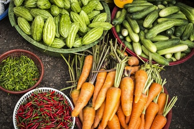
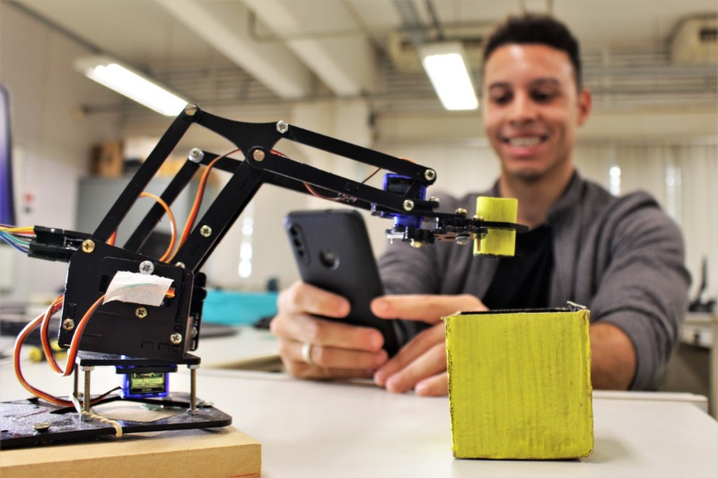

Seção 04 — Público-alvo
Quem se beneficia do AgroSat
Solução desenhada para quem trabalha a terra e merece dados de qualidade espacial.

Pequenos Agricultores
Famílias rurais que precisam de dados de campo confiáveis sem investir em estações meteorológicas caras.

Técnicos e Extensionistas
Profissionais da EMATER e cooperativas que orientam produtores e precisam de leituras locais precisas.

Estudantes de Engenharia
Cursos de Engenharia Agronômica, Elétrica e de Computação que exploram IoT aplicado ao agronegócio.